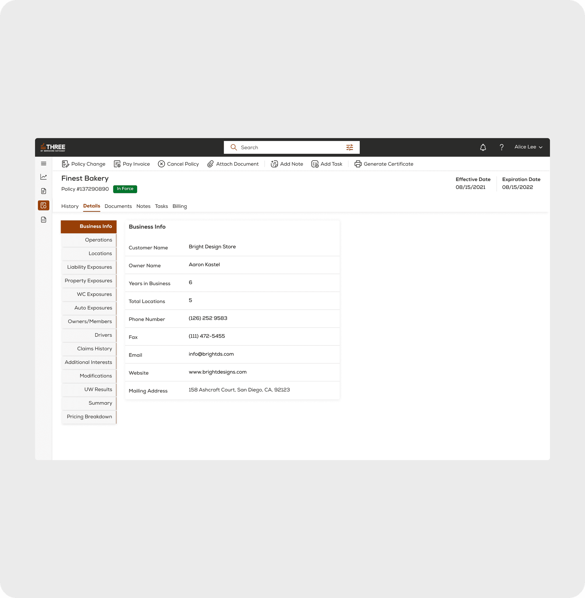
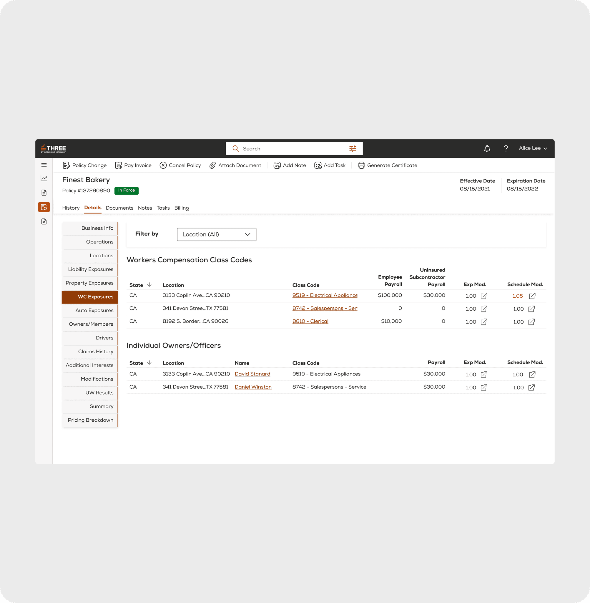
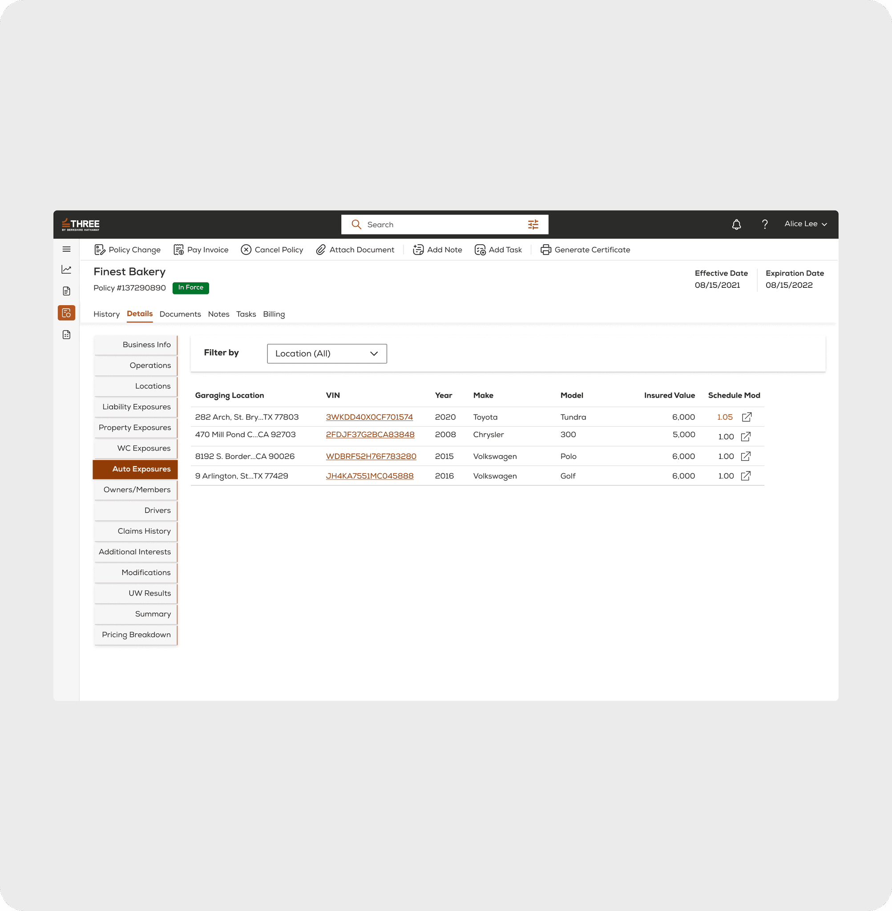
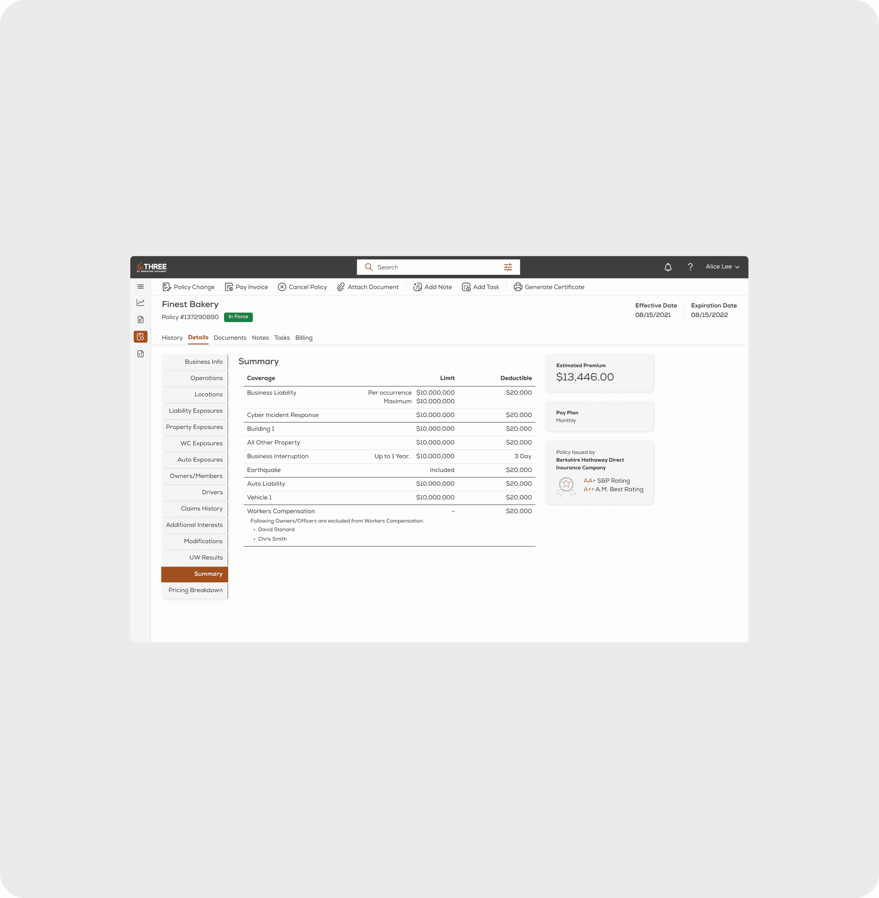

Three Insurance: Multi-Tenant Underwriting & Rating Engine
How a unified Material UI token architecture, a 15-module progressive intake tree, and multi-tenant carrier white-labeling streamlined commercial rating across 80+ production screens for Berkshire Hathaway at Radity Zurich & New York.
Role & Mandate: Lead Product Designer & Design Systems Architect (via Radity GmbH Zurich & New York), operating directly with US and European engineering squads and Berkshire Hathaway executive stakeholders.
The Problem: Commercial insurance for American small businesses historically required four separate policies from distinct carriers (General Liability, Commercial Property, Business Auto, and Workers' Compensation). Three Insurance was founded to consolidate all four lines into a single master policy. However, this consolidated rating model multiplied intake complexity across disparate risk factors, state jurisdictions, and class codes.
The Solution: Architected an 80+ screen broker intake portal and carrier underwriting suite. Replaced sprawling multi-tab dashboards with a 15-module vertical progression tree, context-aware endorsement editing states, automated NHTSA VIN decoding, and an enterprise Material UI token pipeline enabling white-label deployment across Three, Ranger, and Mother portals.
Audited Business Impact: Slashed broker quote-to-bind latency from 48 hours to under 12 minutes (-95.8%), eliminated cross-squad layout drift, and achieved 85% component reuse across three international insurance brands.

01 · The Berkshire Hathaway Challenge: Multi-Line Commercial Consolidation
In the United States commercial insurance market, small business owners (SMBs) operate under extreme operational fragmentation. Insuring a bakery, an electrical contractor, or a light-industrial fleet traditionally mandated purchasing, negotiating, and servicing four disconnected contracts:
- General Liability: Protecting against third-party bodily injury and property damage.
- Commercial Property: Covering buildings, equipment, inventory, and business interruption.
- Commercial Auto: Multi-vehicle liability and physical collision schedules across state lines.
- Workers' Compensation: State-mandated coverage governed by rigid NCCI class codes and payroll audits.
Berkshire Hathaway founded Three Insurance to eliminate this friction by packaging all commercial risks into a single comprehensive policy. While this simplified the purchasing model for business owners, it transferred monumental cognitive complexity directly onto the broker intake software.
Operating as Lead Product Designer at Radity (Zurich & New York), I was commissioned to architect the primary agent and underwriter portal. The challenge was dual: the software had to accommodate immense data density (80+ input fields, multi-vehicle schedules, payroll classifications) while remaining intuitive enough for high-volume commercial brokers to submit and bind without formal training.
02 · Form Architecture & Data Density: The 15-Module Progression Tree
Traditional enterprise underwriting software relies on nested horizontal tabs. In usability audits conducted with commercial underwriters, horizontal tabs exhibited severe failure modes: horizontal scrolling concealed required fields, tab switching triggered accidental form resets, and underwriters lost geographic orientation when switching between location-based risks.
I discarded horizontal tab navigation and introduced a task-driven 15-module vertical progression tree anchored on the left viewport margin:
| Module Group | Primary Sub-Modules | Architectural Invariant & Enforcement |
|---|---|---|
| 01 · Entity Core | Business Info, Operations, Locations | State jurisdiction validation, NAICS code lookup, automated tax ID (EIN) verification via backend API. |
| 02 · Asset Exposures | Liability, Property, Auto Exposures | Building construction types, NHTSA VIN decoding, multi-vehicle garaging schedules. |
| 03 · Workforce & Risk | WC Exposures, Owners/Members, Drivers | NCCI class code payroll splitting, officer exclusion waivers, driver MVR records. |
| 04 · Rating Engine | Claims History, UW Results, Pricing | Automated loss run ingestion, automated credit scoring, real-time premium recalculation. |

03 · Role-Based Gating: Broker Intake vs. Carrier Underwriting
In regulated commercial insurance, licensed insurance producers (external brokers) must never possess the system authority to alter loss history, override state class codes, or apply discretionary pricing credits. Conversely, internal carrier underwriters require granular control over risk modifiers to salvage viable business submissions.
To enforce this compliance boundary at the design system level, I designed a dual-role UI gating architecture:
- Licensed Producers (Broker Portal): Constrained to eligibility pre-qualification, entity discovery, basic document attachment, and automated quote generation within fixed actuarial thresholds.
- Carrier Underwriters (Underwriting Suite): Gated access to Workers' Compensation class code splits, experience modification adjustments (Exp Mod 0.75–1.25), and discretionary Schedule Mod overrides.

04 · The Endorsement Mode Defense: Eliminating Policy Mutation Drift
In commercial policy lifecycle operations, mid-term endorsements (e.g. adding a new delivery vehicle or updating a commercial lease address) represent the single greatest source of actuarial leakage. When agents modify an active policy, accidental edits to unreviewed liability sections frequently pass unnoticed into production binders.
“A design system is a control system. Its job is to make the wrong thing impossible to build.”
To make accidental coverage alteration impossible, I introduced Context-Aware Endorsement Mode:
- Targeted Field Scoping: Upon initiating an endorsement, the portal enters a locked state. Only the specific mutated module (e.g. Auto Exposures) becomes editable; all surrounding modules (Property, Liability, WC) are rendered in a high-contrast read-only mask.
- Diff Verification Ledger: Prior to submission, the system generates an automated side-by-side ledger displaying original policy limits vs. proposed endorsed values.
- Audit Immutability: Every endorsement change generates a timestamped snapshot, eliminating unreviewed liability exposure across carrier underwriting books.

05 · Multi-Tenant White-Labeling: Three, Ranger & Mother Portals
Operating at Radity GmbH (Zurich), our strategic mandate extended beyond Three Insurance: the core underwriting engine was architected as an extensible multi-tenant design system capable of powering multiple distinct commercial carriers from a unified frontend code repository.
By implementing a strict semantic Material UI (MUI v5) token pipeline, the system dynamically adapted across three disparate insurance companies without mutating business logic:
| Carrier Brand | Domain & Geography | Scale & Surface | Architectural Specialization |
|---|---|---|---|
| Three Insurance | Berkshire Hathaway (US) | 80+ Screens · MUI v5 | Consolidated 4-line commercial master policy, 15-module progressive underwriting tree. |
| Ranger Insurance | Modern Home & Fleet (US) | 120+ Screens · MUI v5 | Two-role agent/admin portal, high-risk industrial property and fleet rating. |
| Mother Inc | Tech & Cyber Liability (US) | 45+ Screens · MUI v5 | Instant quote API ingestion, automated cyber security posture scoring. |

06 · Audited Business ROI & Operational Leverage
The transformation of Three Insurance from an offline manual quoting desk into a high-density digital underwriting platform delivered verifiable, audited performance across commercial broker networks:
Slashed commercial submission turnaround from an industry average of 48 hours down to under 12 minutes (-95.8%).
Gated NCCI class code validation and endorsement field masking eliminated out-of-boundary risk mutations.
Common MUI token pipeline enabled rapid rollout of Ranger Insurance (120+ screens) and Mother Inc with zero frontend rewrites.
From initial stakeholder discovery workshops to fully documented engineering handoff across Zurich and US development teams.